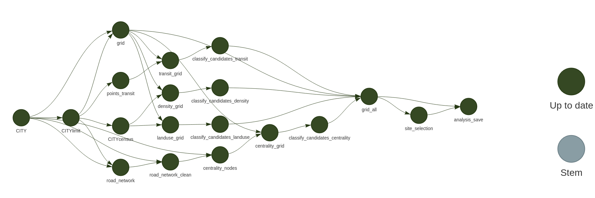
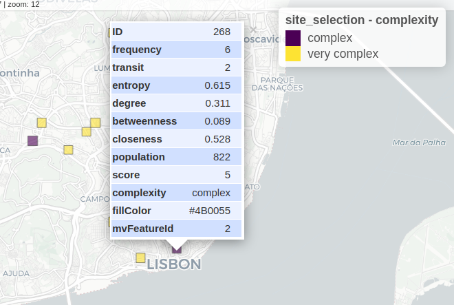

SiteSelection aims to find areas for a dynamic street re-allocation experiment.
It consist in a process of multi criteria to select the cell locations of a given city or neighbourhood where the street space is more disputed by different transport modes and street activities.
SiteSelection is a full script that uses a dynamic pipeline, and gathers and processes information on:
- Road network centrality measures (betweenness, closeness, degree)
- Population density
- POI and activities
- Public Transit demand
- Traffic levels (TBC)
Sources
The SiteSelection package is based in Portuguese open datasets, such as census and GTFS data.
Although it is easy to run for any location in Portugal, you may adapt the code to run at other locations (considering you have the similar data needed).
Data needed for other locations:
- Census data (population and buildings)
- POIs (see data_extract.R)
- GTFS data (see transit.R)
- Administrative boundaries
Setup
Requirements
- QGis and
qgis_processinstalled and working -
targetsR package. -
siteselectionR package [under development].
Change defaults
Open the _targets.R file and change the defaults to your needs (don’t forget to save the file before run!):
# Set defaults HERE ######################
CITY_input = "Almada" # Municipality name in Portugal
GEOJSON = TRUE # use a different limit? made with https://geojson.io/ and saved in inputdata/*.geojson
GEOJSON_input = "map1" # name of the file if GEOJSON = TRUE. default: "map1"
cellsize_input = c(400, 400)# in meters
square_input = TRUE # TRUE = squares, FALSE = hexagons
build_osm = FALSE # build and clean osm road network again?
analysis = FALSE # export input parameters and results to a xls file? default: FALSE
# Thresholds
population_min = median # mean or median? default: mean
degree_min = mean # mean or median? default: mean
betweeness_range = 0.40 # percentile to exclude (upper and lower) default: 0.25
closeness_range = 0.25 # value to exclude (upper and lower) default: 0.25
entropy_min = 0.35 # value to exclude (lower) default: 0.5
freq_bus = c(4, 10, 20) # frequency of bus stops to define level of service. last 2 will remain. default: c(4, 10, 20) Run the pipeline
library(targets)
tar_visnetwork(targets_only = TRUE) # or false, to show objectsAnd you should have something like this


If you want to see the filtered cells (candidates), you can load the site_selection object and plot it, with complex and very complex cells (transit layer considered).

When the process is not complete, you may have an error like this

Work with non-administrative boundary
You can set another polygon limit to the analysis.
Just create a .geojson file with the area of interest and save it in the inputdata folder.
Then, set the GEOJSON = TRUE and GEOJSON_input to the name of the file, without the extension.
About
This work is part of Streets4All Project, developed at the University of Lisbon and at the University of Coimbra, and funded by Fundação para a Ciência e Tecnologia (PT).
The concept is based in:
Valença, G., Moura, F., & Morais de Sá, A. (2023). Where is it complex to reallocate road space? Environment and Planning B: Urban Analytics and City Science, 0(0). https://doi.org/10.1177/23998083231217770.
Please refer to this work as:
Félix R, Valença G (2024). SiteSelection: An R script to find complex areas for the Streets4All Project. R package version 0.2, https://github.com/U-Shift/SiteSelection/.